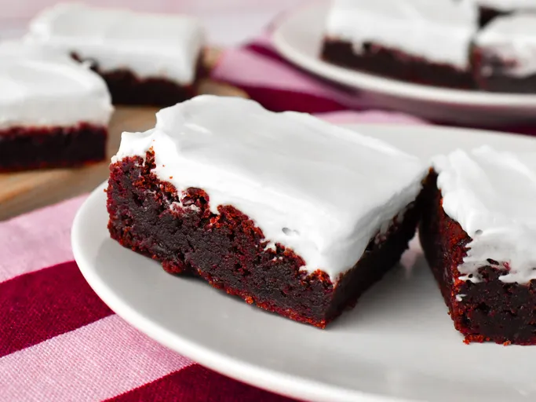

Easy Fried Rice
This fried rice recipe only takes 15 minutes to cook and tastes just like you get at your favorite Chinese restaurant. Leftover rice, plus a couple of eggs, baby carrots, peas, and soy sauce is all you need. Garnish with sliced green onions, if desired.
Minor Descriptions
Fried rice is the ultimate family-friendly dish that yields maximum flavor without fuss. Loaded with tender sauteed veggies and delicious bits of scrambled egg, this top-rated recipe makes it easy to recreate a takeout favorite from home in just 20 minutes.
Over a thousand home cooks agree — this simple, savory recipe is a winner. But what if you don't have a wok on hand? Learn the best methods for making fried rice at home, from a griddle to Instant Pot preparation.
What is Fried Rice?
Fried rice is a traditional Chinese preparation of cooked rice, vegetables, protein, soy sauce, and aromatics. The ingredients are stir-fried in a large pan or wok for even flavor distribution. An ideal use for leftovers, fried rice is quick, customizable, and incredibly simple to put together with whatever is in your fridge.

Ingredients
- ⅔ cup chopped baby carrots
- ½ cup frozen green peas
- 2 tablespoons vegetable oil
- 1 clove garlic, minced, or to taste (Optional)
- 2 large eggs
- 3 cups leftover cooked and chilled white rice
- 1 tablespoon soy sauce, or more to taste
- 2 teaspoons sesame oil, or to taste
Directions
- Assemble ingredients.
- Place carrots in a small saucepan and cover with water. Bring to a low boil and cook for 3 to 5 minutes. Stir in peas, then immediately drain in a colander.
- Heat a wok over high heat. Pour in vegetable oil, then stir in carrots, peas, and garlic; cook for about 30 seconds. Add eggs; stir quickly to scramble eggs with vegetables.
- Stir in cooked rice. Add soy sauce and toss rice to coat. Drizzle with sesame oil and toss again.
- Serve hot and enjoy!
Thank You😎😭😭😊!!
Jay's Signature Pizza Crust
This thick crust pizza dough recipe yields a crust that is soft and doughy on the inside and slightly crusty on the outside. Cover it with your favorite sauce and toppings to make a delicious pizza.
:max_bytes(150000):strip_icc():format(webp)/7245-jays-signature-pizza-crust-DDMFS-4x3-2072304aa461449d8f00637c3cec83f1.jpg)
Ingredients
- 1 ½ cups warm water (110 degrees F/45 degrees C)
- 2 ¼ teaspoons active dry yeast
- ½ teaspoon brown sugar
- 2 tablespoons olive oil
- 1 teaspoon salt
- 3 ⅓ cups all-purpose flour, divided
Directions
Step 1
Stir together warm water, yeast, and brown sugar in a large mixing bowl; let sit for 10 minutes.
Step 2
Stir oil and salt into yeast mixture. Mix in 2 1/2 cups flour until incorporated. Turn dough out onto a clean, floured surface. Knead dough, adding remaining flour, a little at a time, until dough is no longer sticky. Place dough into an oiled bowl.
Step 3
Cover with a towel and let rise until doubled in size, about 1 hour.
Step 4
Punch down dough and form it into a tight ball. Allow dough to relax for 1 minute before rolling out.
Step 5
Preheat the oven to 425 degrees F (220 degrees C).
Step 6
If baking dough on a pizza stone, place toppings on dough and bake immediately. If baking dough on a pan, lightly oil the pan and let dough rise for 15 to 20 minutes before topping and baking it.
Step 7
Bake in the preheated oven until cheese is melted and crust is golden brown, 15 to 20 minutes..
Red Velvet Brownies
These chewy red velvet brownies are topped with a tangy cream cheese frosting. Feel free to play around with the amount of cocoa powder in the recipe; use anywhere from 1 to 3 tablespoons, depending on how chocolaty you want them to be.

Ingredients
- 1/2 cup unsalted butter, melted
- 3/4 cup firmly packed light brown sugar
- 1/4 cup white sugar
- 3/4 teaspoon salt
- 1 large egg, at room temperature
- 2 teaspoons vanilla extract
- 3 tablespoons Dutch-processed cocoa powder
- 1/2 teaspoon instant espresso powder (optional)
- 1/4 teaspoon red gel food coloring, such as AmeriColor® Super Red
- 3/4 cup all-purpose flour
- 1/8 teaspoon baking soda
Frosting
- 2 tablespoons unsalted butter, softened
- 4 ounces full fat cream cheese, at room temperature
- 1 cup confectioners sugar
- 1/2 teaspoon vanilla extract
- 1 pinch salt
- 1 teaspoon heavy cream, chilled
Directions
- Preheat the oven to 350 degrees F (180 degrees C). Line an 8x8-inch square pan with enough parchment paper to have overhang on all sides.
- Whisk melted butter, brown sugar, white sugar, and salt together in a large bowl until mixture begins to lighten in color, about 1 minute. Add in egg, vanilla, and vinegar and whisk until smooth and combined. Add in cocoa powder and espresso powder, and whisk until completely smooth and combined. Whisk in red food coloring until thoroughly incorporated. Add in flour and baking soda and whisk until just combined.
- Pour batter into the prepared pan and spread into an even layer.
- Bake in the preheated oven until brownies look set and begin to pull away from the edges of the pan, 25 to 30 minutes. Allow bars to cool completely in the pan.
- To make frosting, beat butter in a bowl until light and fluffy. Add in cream cheese and beat until smooth and combined. Add in confectioner's sugar, 1/2 teaspoon vanilla, and pinch of salt and beat until mixture is completely smooth, 2 to 3 minutes. Add in heavy cream and beat until frosting is light and fluffy, 2 to 3 minutes more.
- Place frosting on cool brownies and spread into an even layer. If desired, place brownies into the fridge to allow frosting to set before cutting. Cut into 16 bars.
Enjoy😋🍰🍽️!!